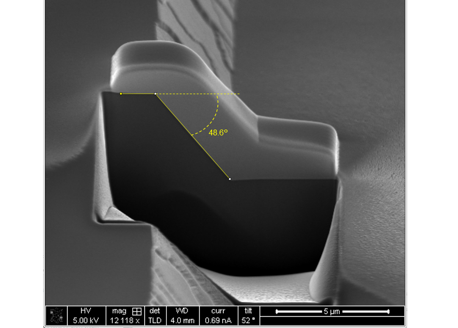
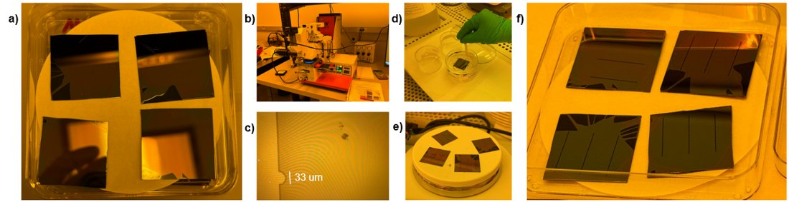
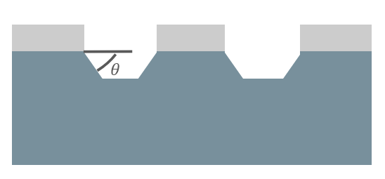
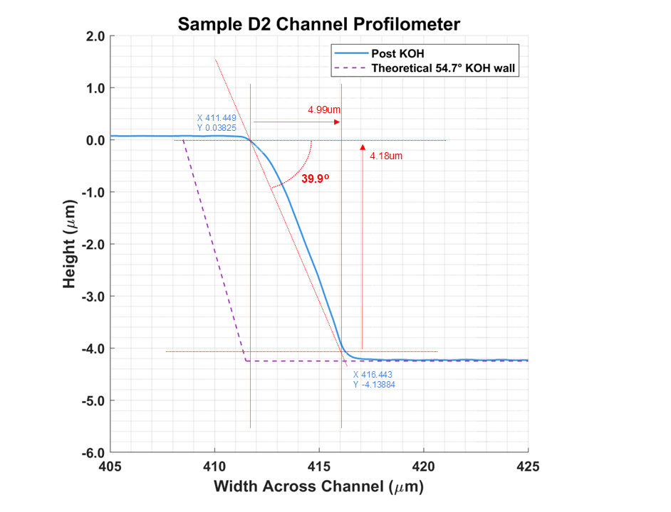
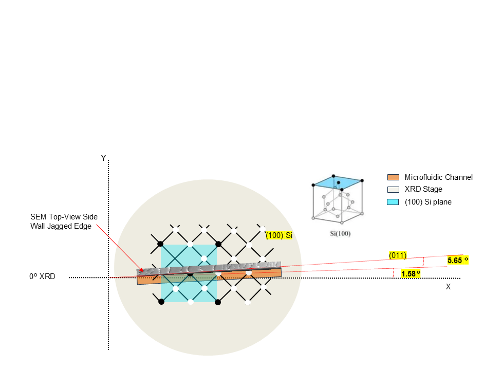
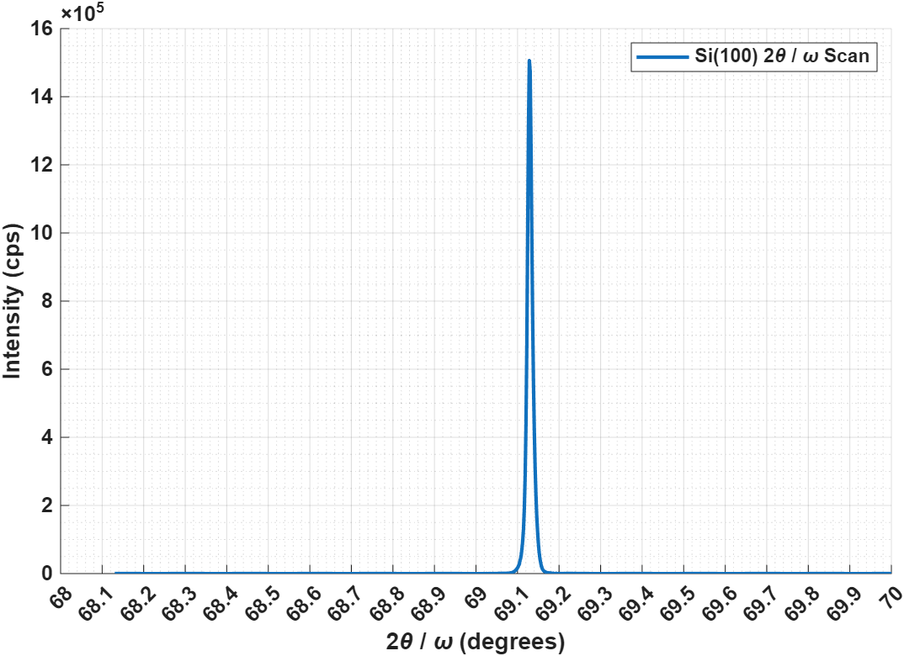
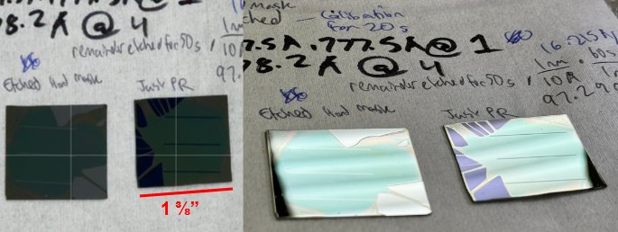
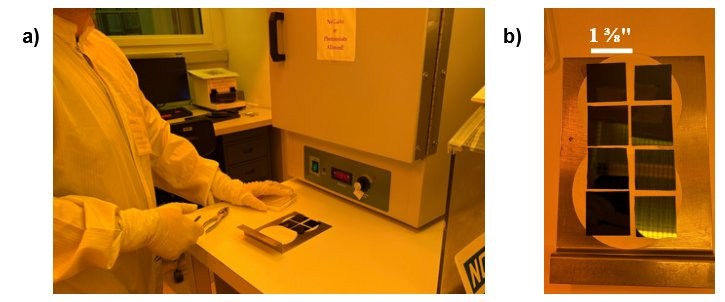
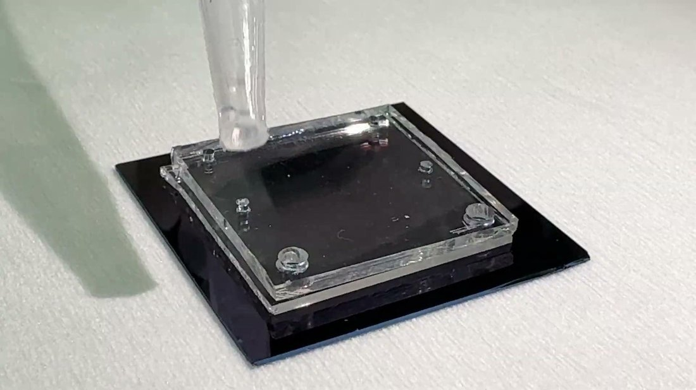

MEMS microfluidic channels
ME 292 cleanroom course, UC Santa Barbara, Professor Sumita Pennathur · 2026
In an ME 292 cleanroom course at UC Santa Barbara, I fabricated microfluidic channels in both silicon and glass, then attempted to bond them closed for current sensing. The silicon process ran through a thermally grown oxide hard mask, AZ P4110 photolithography, a BHF wet etch to open the mask, a KOH anisotropic etch into the substrate, and a final insulating oxide grown back over the surface. Glass channels skipped the hard mask, as the target depths were shallow enough to etch straight through the photoresist in BHF.
KOH etches silicon anisotropically, so a <100> wafer etched through a mask aligned to the crystal should produce a sidewall at 54.7°. An initial profilometer scan measured 39.9° instead, well below the theoretical value, which was the first sign something was off, though it wasn't clear whether the discrepancy was a measurement limitation or a real crystal misalignment. A follow-up SEM cross section, milled with a focused ion beam and imaged at a 52° tilt, measured 48.6°, closer to theory but still off. XRD confirmed the substrate was true Si<100>, and a phi scan of the etched channel found the mask misaligned to the crystal's (011) plane by about 5.65°, close to what the SEM measurement had already suggested, which likely accounts for most of the remaining gap.
Closing the channels turned out to be the harder half of the project. I compared reversible PDMS peel-and-stick bonding against irreversible oxygen plasma bonding, along with thermocompression and solvent bonding as options, and settled on oxygen plasma as the best fit for the cleanroom's tools and the channel geometry. In practice, the channels were shallow enough that the PDMS base sagged into them under either bonding method, so testing for current sensing ultimately used a TA-supplied dataset from a deeper DRIE-etched reference chip instead of the group's own devices.


More photos






